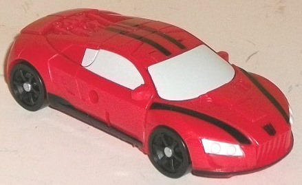
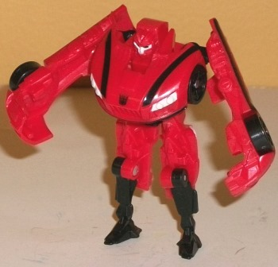
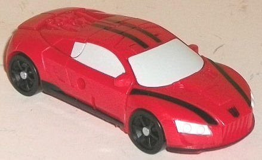
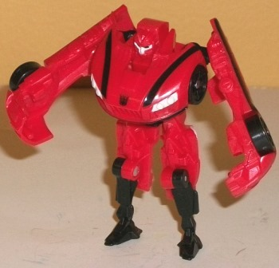
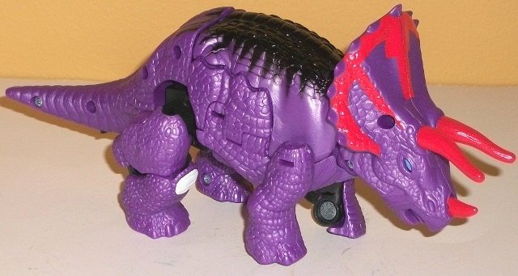
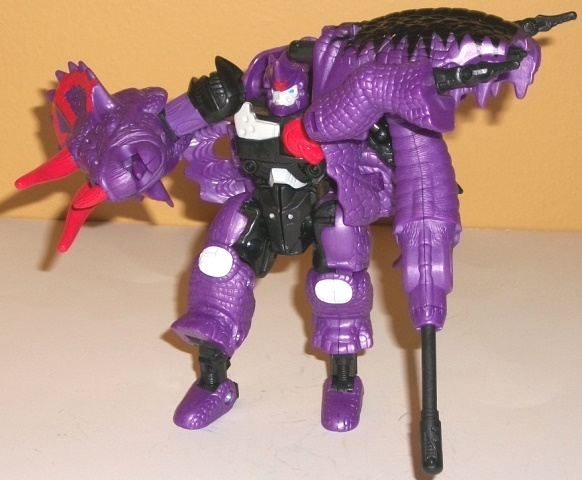

Decepticon
Stinger
Decepticon
Stinger
 
Size : Legion
Difficulty of Transformation: Very Easy
Color Scheme : Moderately light red, black, and some off-white
Individual Rating : 6.8
Price : $15 (U.S.)
(NOTE: Because this set is composed of repaints,
this is not a full-blown review. This mainly covers any changes made to
the set and the color scheme, and merely compares it to the original versions
of these molds. For a review on Legends RotF Sideways-- the mold used for
Stinger--go
here
. For a review on Beast
Machines Triceradon-- the mold used for Slug-- go
here
.)
Decepticon
Stinger


Size
: Legion
Difficulty of Transformation:
Very
Easy
Color Scheme
: Moderately light red,
black, and some off-white
Individual Rating
: 6.8
No, this isn't just a
re-release of the original
solo-packed
legion class "Stinger" toy-- rather, Hasbro redecoed a DIFFERENT legion-class
car mold for this exclusive 2-pack release. Odd, but I'm not complaining--
this mold actually fits Stinger better than Knock Out. Not a LOT better,
mind you, but at least this mold is a movieverse design. The vehicle mode
is still completely wrong-- an Audi R8 lookalike compared to a Pagani Zonda,
the latter of which is Stinger's actual alt mode in the movie-- and the
robot mode has arms, legs, and some headlights on the chest, but is otherwise
completely different in details from Stinger's Bumblebee look-alike model
in the movie. Ignoring all that and getting down the colors themselves,
a rather nice shade of light red is used for Stinger's main color, with
a fair amount of black providing some excellent contrast. The stripes down
the sides and top of the mode really help to break up all that red (though
the back end in said mode is completely unpainted, unfortunately-- the
rear engine detailing really could've used some silver paint or something).
The black legs and waist do the same for the robot mode, even if the toy
is mostly still two-tone. There's also a rather nice shade of off-white
that's used for the headlights, face, and windows, which contrasts against
the black quite well and is light enough to even contrast against the red,
as well. (That said, off-white isn't exactly the most fitting color for
windows-- though more black would've kept Stinger from having enough variety
in his color scheme.)
No mold changes have
been made to this version of Stinger, beyond the remolding done to
Prime/DotM
Mirage
to allow the mold to hold Cyberverse-scaled weapons in both
modes.
 Dinobot
Slug
Dinobot
Slug


Size
: Deluxe
Difficulty of Transformation
: Very
Hard
Color Scheme
: Reddish tinted royal
purple, black, and some light red, white, and light sky blue
Individual Rating
: 7.1
Every movie line, there's
always a couple of toys-- usually exclusives-- that make you raise your
eyebrow. Not necessarily in disappointment, but just because of how nuts/unexpected
they are-- and this is one of those releases. This mold was last used about
a solid
decade
earlier, and given the cost-cutting measures Hasbro's
implemented since about 2012, I didn't think this mold would get any sort
of future domestic release, especially at a discount price. But here we
are! Obviously, other than a triceratops alt mode, this mold shares nothing
in common with the AoE design, though for this version, the color scheme
has been changed to-- roughly-- match the
mainline
AoE deluxe Slug's
. Thus his primary color is a shade of purple, though
on this version, it's less of a purplish blue and more of a reddish purple--
same general area on the color wheel, but tinted a bit differently. I honestly
can say I like this shade of the color a little better, as not only does
it contrast with the light red, it complements it a bit as well. Speaking
of the light red, it's mostly used on Slug's triceratops head, though not
in the wacked-out angular spike paint apps style like on most of Slug's
other AoE toys-- the red paint apps that are on the crest are more straightforward
stripes in a cool-- but less "extreme"-- pattern. The horns are just painted
solid red, and there's a tiny bit of red on the robot forehead crest and
chest as well. The other major color besides purple on Slug is black, which
mostly just makes itself known as an angular "patch" mark on the top of
the beast mode-- and which really helps to break up what would otherwise
be a pretty solidly purple mold, so that paint app is much appreciated.
The black takes a more dominant role in robot mode, forming most of the
robot parts, and makes the robot mode more pleasing to the eyes in terms
of color variety, with less of a big patch of uninterrupted purple. White
and light blue are also used as accent colors-- I particularly like the
white used on some of the robot parts, as it adds a significant light color
to said robot mode and obviously contrasts well with the black. The light
blue is the same as that on other AoE Dinobot eyes. What's interesting
is that the "eyes rolling back" gimmick on the triceratops head has the
eyes blue when they're in their "normal" position, but unpainted black
when they're in their "dead" position, thus making it look like his eyes
are "offline"-- a nice touch.
No mold changes have
been made to this version of Slug-- he still has the spark crystal, but
the Beast Machines Dinobot insignia on it has been covered up with an Autobot
symbol.
The Stinger/Slug 2-pack
is one of my favorite exclusives from the AoE line. Stinger's nothing to
write home about, but unfortunately Stinger doesn't get a more complex
movie-accurate design, so at least a red
movieverse
car mold is
used for him this time around, even if he looks a bit too close to Prime/DotM
Mirage/Dino. That said, Stinger is more of a "bonus"-- a re-use of a Japanese
Beast Wars mold in this day and age is truly unexpected, and apes Slug's
AoE color scheme while not going too far and still making Slug's color
scheme a bit more realistic, given his more realistic alt mode on this
release. Plus, whereas the other 2-packs of this assortment are of Legions
and roughly Scout-sized figures, Slug is a DELUXE-- given the inflation
and price points these days, that means you're getting Stinger (and maybe
even a little bit of Slug himself) FREE. So not only is this a nice, unique
exclusive set, but it's a bargain, too. I'd only neglect to recommend this
set if you only want one movie-accurate version of Slug, or can't handle
complex transformations (as Slug's is). It's a nice "blast from the past".
Reviews by Beastbot